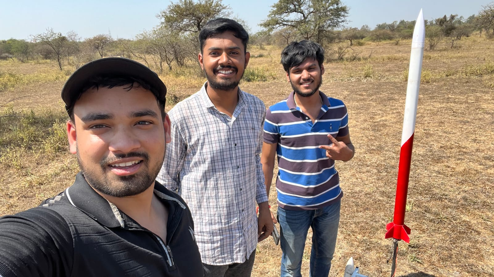
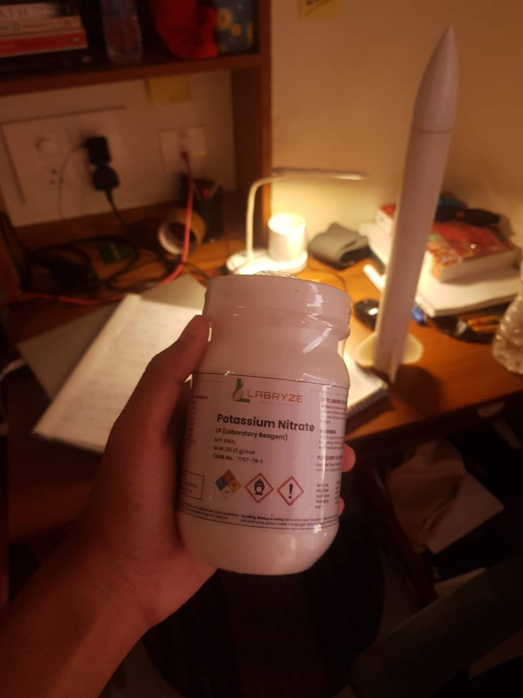
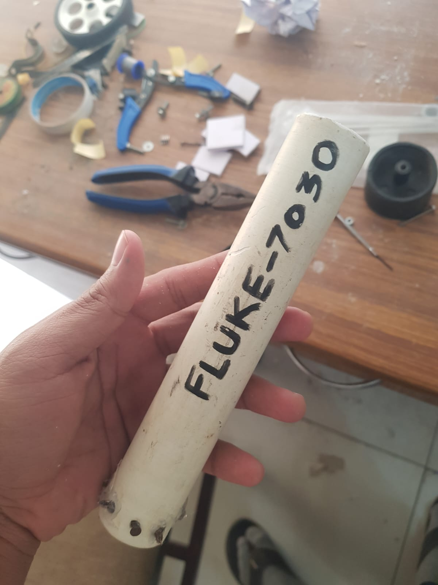
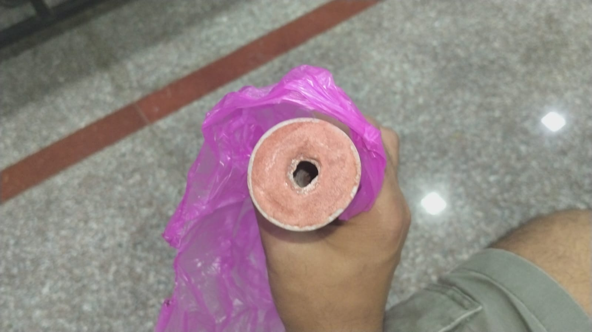
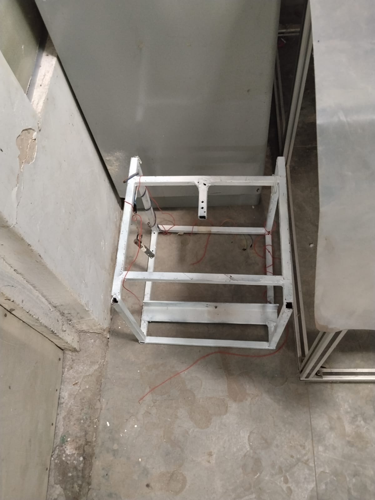
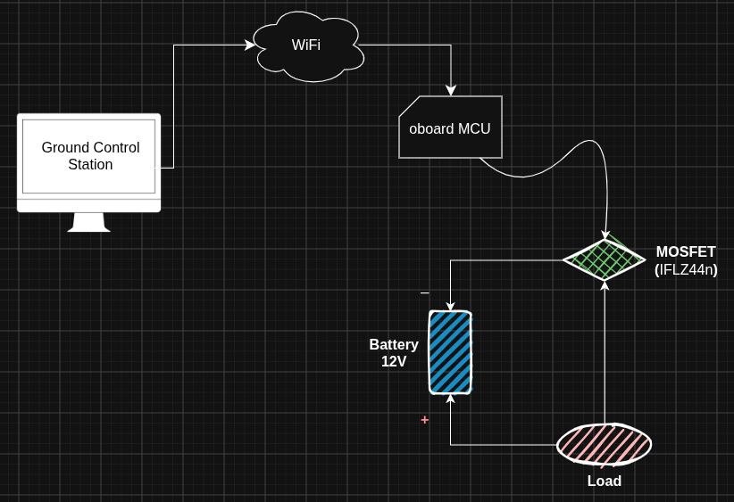

Model Rocketry: Implementing Thrust-Vector Control
Overview
This project is an ongoing exploration of amateur rocketry, with the goal of learning how to design, build, test, and eventually control a small experimental rocket. Rather than treating the rocket as a single finished product, the project is being developed as a collection of interconnected engineering problems: propulsion, structures, electronics, sensing, embedded systems, telemetry, and flight control.

The work documented here covers the development process so far, from building and testing rocket motors to assembling and launching an experimental vehicle. Particular attention is given to the parts of the system that still need to be understood and improved, rather than only documenting the experiments that worked.
A major direction of the project is eventually to introduce active thrust-vector control and use the rocket as a practical platform for learning feedback control, embedded electronics, and flight dynamics. That system is still under development, however, and the current stage of the project is focused on establishing a reliable foundation through propulsion testing, hardware development, and flight experimentation.
This documentation therefore follows the project as it develops: what was built, why particular approaches were chosen, how the systems were tested, what went wrong, and what those results changed about the next iteration. The objective is not to present a finished rocket, but to document the engineering process of gradually figuring out how to build one. All this was done under the guidance of Dr. V. Chintala, Associate Professor, Associate Dean [R&D] GSV.
Purpose and Motivation
I started this project back in August 2025, with the hopes of getting more clarity and hands-on exposure to electronics engineering. The courses taught in class weren't really hands-on and I couldn't shake the feeling of wanting to build something. So I deliberately chose a project that was out of my league, and hard to execute, something that involved interdisciplinary knowledge to perform -- so that I could learn all of engineering at once. Atleast that was the initial motivation, the other reason was -- rockets are hot boy shit! ... and I wanted to impress my college crush (jk!). [i still havent asked her out...!]
What started as an attempt to get more hands-on exposure to electronics gradually became much larger than that. The project has since turned into an excuse to learn whatever the next problem demands, whether that means understanding propulsion, designing hardware, writing software, studying control systems, or simply figuring out why something I built refuses to work.
Experimental Progress
The current work is still in an experimental development phase. The main completed activities are ground-based motor testing and one initial launch, both of which are being used to expose practical problems before more advanced control-system work is presented as a finished result.
Static-Fire Testing
Initially we thought of purchasing commercially available motors. But they soon turned out to be very expensive, the most obvious reason was the fact that they were'nt locally manufactured in India. Brands like Estes are manufactured in Colorado, US. The shipping cost alone would cost more than the motors themselves.
So we decided to manufacture our own sugar motors. Since military grade propellants like APCP and HTPB arent readily available to small student groups, we went with the classic KNSu derivative propellants. Several static-fire tests have been conducted to begin characterizing the propulsion system. These tests are being used to investigate ignition behaviour, motor operation, thrust production, burn characteristics, repeatability, and consistency between manufactured motors.

I ordered a bunch of KNO3 bottles from an online store and some sugar from the local supermarket. The first few batches burned surprisingly well, but we quickly ran into a rather annoying problem: regular granulated sugar is made up of relatively large crystals, while KNO3 is a separate crystalline solid. Simply mixing the two does not guarantee that the oxidizer and fuel are distributed uniformly throughout the mixture.
This is where water became useful. We used it as a temporary solvent so that the sugar and KNO3 could be dissolved and mixed much more uniformly. The important part, however, was that the water was only there to help with processing. It was not supposed to remain in the final material. Any significant amount of water left behind would act as an unwanted thermal load during ignition and could interfere with the consistency of combustion.
So the process became a rather simple cycle: dissolve and mix the constituents, and then remove the water again before the material was used for testing. In other words, the water helped us make a more homogeneous mixture, but was not part of the propellant itself.
The next problem was the sugar itself. Ordinary table sugar, or sucrose, is convenient because it is cheap and easy to obtain, but its relatively high melting behaviour and crystalline structure make it less convenient to process consistently. We therefore began looking at alternative fuels with properties more suitable for the process we were trying to develop.
This led us to sorbitol. Unlike ordinary table sugar, sorbitol has different thermal and physical properties that make it more convenient to process as a fuel. The motivation was not simply to find something that "burns better", but to obtain a material whose preparation and combustion behaviour could be characterized more consistently between tests.
At a high level, the combustion can be thought of as an oxidation reaction: the nitrate provides the oxidizing environment while the organic fuel provides the material being oxidized. Once ignition occurs, the reaction releases a large amount of heat and produces a mixture of hot gaseous products together with condensed solid products.
One of the things we noticed during testing was that the combustion does not produce only gas. Some of the products remain condensed as solid residue, including potassium-containing compounds often referred to collectively as "potash" in this context. The amount and composition of this residue depend on the fuel, oxidizer balance, temperature, and combustion conditions.
This became another reason for investigating sorbitol. Its different decomposition and combustion behaviour can change the balance between gaseous and condensed products compared with sucrose. For us, this mattered because residue is not just a cosmetic issue: condensed products represent material that does not contribute to the expanding gas flow, and excessive deposition can also complicate the interpretation and repeatability of motor tests.
At this point, the purpose of the experiments was therefore becoming clearer. We were no longer simply trying to make something that burns. We were trying to understand how the choice of fuel, the homogeneity of the mixture, the processing method, and the resulting combustion products affected the repeatability of the motor.
Casting Challanges

Cooking the propellant was the easy part -- the bigger problem was casting it into a motor casing before it cooled down. With sugar propellant, we had a very small working window: it cooled rapidly and began to harden within roughly 5--10 minutes. After around 15 minutes, the material became extremely hard, making it considerably more difficult to cast properly.
This was another area where sorbitol proved to be much easier to work with. Once heated, it remained workable for a considerably longer period before beginning to solidify, giving us more time to transfer the material into the casing and form the internal geometry properly. That extra working time made the casting process considerably less rushed and, more importantly, made it easier to produce repeatable motors.
We also wanted to keep the experimental setup as inexpensive as possible. Rather than buying purpose-built tubing for every iteration, we found a suitable piece of PVC tubing in a local scrapyard and repurposed it as the motor casing for our early ground tests. It was a small decision, but these are exactly the kinds of compromises that made the project financially practical while we were still in the experimental phase.

The most critical part of the casting process, however, was not the casing itself -- it was the core. The core determines the internal geometry of the propellant grain and therefore has a direct influence on how much surface area is exposed during combustion. That geometry affects how the motor burns throughout its operating period, so getting the core wrong could make an otherwise good propellant batch behave very differently from the previous test.
The core was made by inserting a metal rod in the propellant mixture while it was soft and yeilding, and removing it once it had dried. The challenge here was getting the rod out of the mix without forming an adhesive layer with the propellant mixture. This meant that casting was not simply a matter of filling a tube and waiting for it to cool. We had to pay attention to the internal geometry as well, because consistency in the grain geometry was just as important as consistency in the propellant itself. At this point, we were beginning to realise that making a motor was less about producing one successful burn and more about being able to reproduce the same physical conditions from one test to the next.
Solid-Motor Thrust-test Rig

We decided to build a custom motor testing rig. Went out to the local metal manufacturing workshops in town and got ourselves a huge 20ft GI bar. We custom cut the bar and my good friend Aman welded the parts into a beautiful cube.
I had more fun doing the mechanical part with my friend rather than the part I was supposed to --- Electronics. So I finally decided to give it a shot. A simple ESP32 -- WiFi -- GUI setup to remotely ignite the motor from a safe distance.
The static-fire results obtained so far have not yet demonstrated the level of consistency and repeatability required for reliable characterization. Because of that, the motor manufacturing process, test setup, and measurement approach are still being improved before the results are treated as a stable propulsion baseline.

Ground Control Station and Test Rig
First Rocket Launch
One rocket launch has been conducted. This launch represents the project's first transition from ground-based propulsion testing to an actual flight experiment.
The launch is currently documented only at a high level because the detailed flight report, configuration information, photographs, and measurements still need to be added. No flight performance numbers are being stated here until the underlying information is reviewed and documented properly.
- Launch date, location, and rocket configuration: to be added.
- Motor used, flight duration, maximum altitude, and observations: to be added.
- Recovery outcome, photographs or video, telemetry if available, and lessons learned: to be added.
Ongoing Work
The project is currently moving from initial propulsion and flight experimentation toward a more disciplined control-system development process. This section is intentionally incomplete and will be expanded as the work becomes better defined and validated.
- Improve motor manufacturing consistency.
- Conduct additional static-fire tests.
- Establish repeatable propulsion characteristics before relying on the motor model.
- Develop the TVC control-system architecture and mathematical model.
- Define actuator, sensor, electronics, simulation, and controller-development requirements.
- Validate each subsystem experimentally before documenting it as a completed result.
Future Work
Future development will be documented here once the current experimental work produces enough evidence to support a clearer roadmap. The items below are directions for future work, not claims of completed implementation.
- Propulsion refinement and repeatable motor characterization.
- TVC mechanism development and control-system modelling.
- Flight computer, electronics, and sensor integration.
- Closed-loop control development and simulation/validation work.
- Additional flight testing and eventual controlled, recoverable flights.